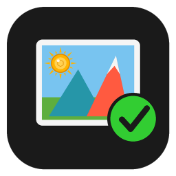

WFastPic
Un tributo open source a Picasa
An open source tribute to Picasa
Scegli e sistema centinaia di foto HEIC su Windows, da tastiera e senza aspettare.
Pick and fix hundreds of HEIC photos on Windows, from the keyboard.
Space tieni · keep★ stelle · starsRitaglia · CropPersone · PeopleMappa · Map
Non affiliato a Google · Not affiliated with Google. Picasa is a trademark of Google LLC.